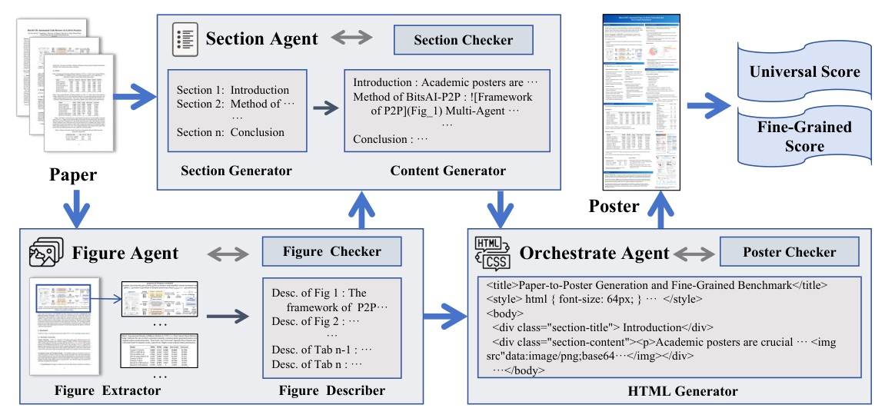
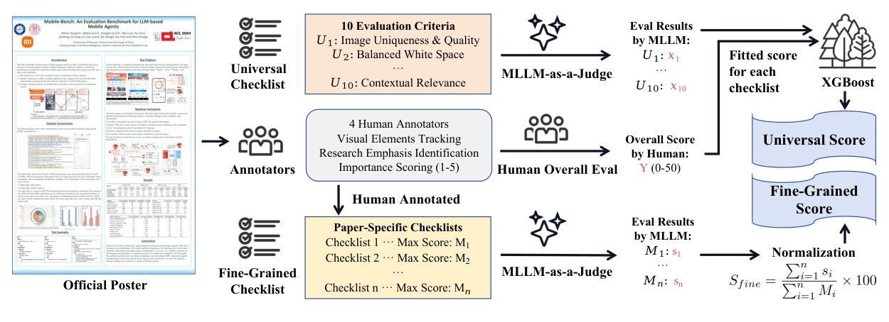

一篇把 academic poster generation 拆成 Figure Agent → Section Agent → Orchestrate Agent 的多代理系統論文，並同時提出 instruction dataset 與細粒度評測。
P2P 的關鍵不是「讓 LLM 寫海報」，而是把海報製作拆成可檢查、可反思、可評分的 multi-agent workflow。
視覺抽取、內容規劃、HTML/CSS 組版各自有 checker；P2PEval 再用 Universal + Fine-Grained 評測把「像不像官方 poster」量化。


| model | R² |
|---|---|
| XGBoost | 0.92 |
| Regularized methods | 0.89 |
| Random Forest | 0.83 |
| OLS | 0.66 |
| method | FineGrain | Universal | source |
|---|---|---|---|
| Claude-3.7-Sonnet reasoning | 65.8848 | 35.5062 | Tab.1 p.9 |
| Claude-3.7-Sonnet / P2P | 65.3962 | 37.2474 | Tab.1 p.9 |
| Deepseek-R1 reasoning + Claude figures | 62.5013 | 33.9701 | Tab.1 p.9 |
| Qwen3-P2P-8B | 57.6622 | 32.4996 | Tab.1 p.9-10 |
| Qwen3-8B base | 45.0272 | 28.8107 | Tab.1 p.9 |
| model pair | FineGrain | Universal | delta note |
|---|---|---|---|
| Qwen3-P2P-8B | 57.6622 | 32.4996 | fine-tuned on P2PInstruct |
| Qwen3-8B base | 45.0272 | 28.8107 | +12.635 FineGrain after FT |
| Qwen2.5-VL-P2P-7B | 37.3078 | 25.0337 | fine-tuned on P2PInstruct |
| Qwen2.5-VL-7B base | 13.7417 | 13.0597 | +23.5661 FineGrain after FT |
| comparison A / B | preferred or tied | strictly preferred |
|---|---|---|
| P2P / YuanBao | 83.05% | 54.35% |
| P2P / Original author poster | 57.63% | 35.59% |
| YuanBao / Original author poster | 20.34% | 12.40% |
| output format | FineGrain | Universal |
|---|---|---|
| HTML | 65.3962 | 37.2474 |
| SVG | 52.7408 | 30.6648 |
| LaTeX | 56.8756 | 25.2585 |
Ablation 的訊息很清楚：multi-agent 不是包裝，checker / figure descriptions / modular steps 各自提供穩定性。
| layout statistic | Claude | GPT | interpretation |
|---|---|---|---|
| Total columns | 376 | 293 | Claude more fragmented |
| Tallest column height | 7272.22 | 5794.42 | Claude taller max column |
| Height CV | 0.21 | 0.18 | GPT more uniform |
| Blank space proportion | 19.16% | 14.92% | GPT uses space better |
P2P employs three specialized agents—the Figure Agent for visual element processing, the Section Agent for content generation, and the Orchestrate Agent for final poster assembly, each paired with a dedicated checker module to enable iterative refinement and ensure output quality.
P2P 把任務拆成圖像元素、內容生成、最終組版三個代理，並在每個代理後加 checker/reflection，讓 poster 不是一次性生成，而是可回饋修正的流程。§1 p.3; §2.1 p.4-5
The annotation process results in 1738 checklist items, with 775 associated with visual elements. The scoring system yields an average per-item maximum score of 4.07.
P2PEval 的細粒度評估不是抽象打分，而是把官方 poster 的圖像、內容、結構與研究重點拆成 1,738 個 checklist item，其中 775 個直接關聯 visual elements。§3.1 p.7
This confirms our hypothesis that poster generation benefits significantly from modularized, specialized processing that mimics the distinct cognitive steps humans undertake when creating posters from research papers.
ablation 的真正訊息是：多代理不是裝飾，模組化、figure description、reflection 分別對 fidelity、layout、審美穩定性有貢獻。§4.3 p.11
週日輪轉：火爆 GitHub Repo 或公司技術報告